Heating / Cooling coil 2-stage heat pump, two binary outputs with reversing valve control (HCclHpu13)
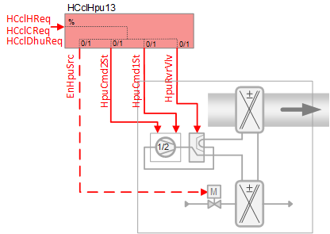 | This application function operates a 2 stage heat pump and its reversing valve. The heat pump stages are calculated based on request signals (from the room controllers) received for heating, cooling and dehumidification. Another optional binary output can be used to enable a local source device (for example, a water pump). Various heat pump safety switches can be connected as well as source state and availability and the compressor’s electric power. This application function is for two single-speed compressors or one multi-speed compressor. |
Required elements and how to configure them:
Element | I/O | Signal type |
|---|---|---|
HpuCmd1St "Heat pump command first stage" | On-board output, Heat pump control | 2-Stage + Reversing valve |
Function
The figure below shows BACnet objects associated with this application function. Primary signal flow is summarized as follows:
The demand signal(s) are received (HCclHReq / HCclCReq / HCclDhuReq) and processed into binary output signals for heat pump coil stage position (HpuCmd1St / HpuCmd2St).
Basic function: Accept request signal from associated room controller and pass it through a device mode logic switch; Output the result as a command to the BACnet object that controls the device.
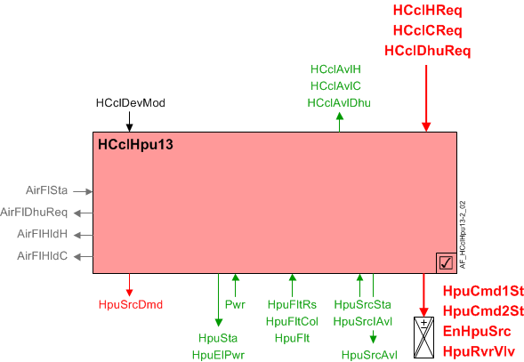
| Command or request (or related) |
| Notification of condition or status, or availability |
| Device mode |
| Interlock (internal signal, not a BACnet object; see Interlocks section for additional information) |


Sequence – Heating, cooling and dehumidification control
If heating, cooling or dehumidification is used, the accepted request signal (HCclHReq, HCclCReq, HCclDhuReq) will be converted into binary output signal(s) for heat pump coil position, reversing valve position, and source control.
Note
This AF does not perform loop control; its main purpose is to run commands. Loop control processes (for this AF) are managed in the "room" AF(s) that collaborate with this AF to command the end device.
Device mode (HCclDevMod): The input signal for device mode is a multistate value. HCclDevMod supports the following states:
- Off
- Control mode
- Fully open, heating
- Fully open, cooling
Availability & Request signals (heating, cooling and dehumidification)
Heating availability: When the following conditions are true, the binary output signal for "Heating / cooling coil available for heating" (HCclAvlH) will be Yes (available):
- Device mode = Control mode
- Manual control mode parameter (CtlModMan) = Automatic or Heating
- Present dehumidification request is 0%
- OA temperature not below a configurable limit (optional - see EnLockHTOaLo in Configuration)
When HCclAvlH is Yes, and the heating request signal is greater than the switch-on point, the heating request signal will be accepted.
Cooling availability: When the following conditions are true, the binary output signal for "Heating / cooling coil available for cooling" (HCclAvlC) will be Yes (available):
- Device mode = Control mode
- Manual control mode parameter (CtlModMan) = Automatic or Cooling
- Present dehumidification request is 0%
When HCclAvlC is Yes, and the cooling request signal is greater than the switch-on point, the cooling request signal will be accepted.
Dehumidification availability: When the following conditions are true, the binary output signal for "Heating / cooling coil available for dehumidification" (HCclAvlDhu) will be Yes (available):
- Device mode = Control mode
- Manual control mode parameter (CtlModMan) = Automatic or Cooling
When HCclAvlDhu is Yes, and the dehumidification request signal is greater than the switch-on point, the dehumidification request signal will be accepted.
Reversing valve operation
When the device mode (HCclDevMod) is off, the reversing valve is inactive. Otherwise, the position of the reversing valve depends on the configuration of the Boolean parameter RvrVlvActv (Reversing valve is activated by). Compressor commanding during reversing valve switchover depends on the configuration of the Boolean parameter CprStaRvrVlv (Compressor state during switchover reversing valve). Both parameters must be set according to the operation type of heat pump being used. See Configuration.
Changeover delay for heating/cooling
Parameter ChovrDlyHC (Changeover delay for heating/cooling) represents the minimum delay time before reversing valve switchover can occur.
If compressor must be off during reversing valve switchover (CprStaRvrVlv = Off), the reversing valve may only be changed after the compressor remains off longer than ChovrDlyHC.
If compressor must be on during reversing valve switchover (CprStaRvrVlv = On), the reversing valve may only be changed after the change request persists longer than ChovrDlyHC.
Heat pump state (HpuSta)
HpuSta is a MCalcVal object that indicates the operating state of the heat pump (Off, Heating, or Cooling). If device mode (HCclDevMod) is off, HpuSta will be off. The value of HpuSta also depends on the configuration parameter RvrVlvActv (Reversing valve is activated by) and the state of the binary output object HpuRvrVlv (Heat pump reversing valve). HpuRvrVlv can be 0:Inactive or 1:Active.
When device mode is not off:
- If the reversing valve is activated by cooling (RvrVlvActv = Cooling) and HpuRvrVlv is Active, then HpuSta is Cooling.
- If the reversing valve is activated by heating (RvrVlvActv = Heating) and HpuRvrVlv is Active, then HpuSta is Heating.
Compressor commanding (HpuCmd1St, HpuCmd2St)
The 0-100% demand signal (heating, cooling or dehumidification) is used to control the output for the compressor(s). The demand signal is converted to binary output via two hysteresis switches (stage 1: 33% on, 16% off; stage 2: 83% on, 66% off). Each stage of operation has a minimum on / minimum off time of 3 minutes (3 minutes on, 3 minutes off, the times are configurable).
Note
Loop control objects in the Room AF for cooling, heating, and dehumidification are defined per default as PID controllers. To enable staged control the following properties can be changed for each controller as needed:
- Controller type = Staged controller
- Number of stages = 2
During normal operation an interstage time delay (a property of the loop control objects in the Room AF; default 5 minutes) prevents both compressors from energizing / cycling off at the same time. If the room operating mode changes from Comfort or Pre-Comfort to Economy or Protection and no demand is present, then both stages can shut off at the same time.
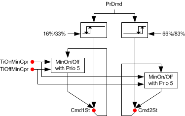
Equipment protection
The normal runtime priority for compressor commanding is 15 (Auto mode 6). During startup and changeover (reversing valve switchover) as well as for interlock functions such as airflow status, minimum On/Off timers and source state monitoring, the compressor(s) are commanded at priority 5 (Protection mode 2) to ensure equipment protection.
The system evaluates a set of conditions in sequential order. If (as soon as) one is found to be True the compressor(s) are commanded On or Off at priority 5 and the evaluation sequence stops. See table.
IF | THEN | |
|---|---|---|
1 | Airflow status from the fan = False | Compressor(s) Off at priority 5 |
2 | Enable monitoring source state available (EnMonSrcAvl) has been set to 1:Yes, and Heat pump source state (HpuSrcSta) = 0:Off | Compressor(s) Off at priority 5 |
3 | Heat pump device mode (HcclDevMod) = Off | Compressor(s) Off at priority 5 |
4 | The timer for compressor minimum on time is active | Compressor(s) On at priority 5 |
5 | The timer for compressor minimum off time is active | Compressor(s) Off at priority 5 |
6 | Reversing valve switchover sequence is active, and the parameter for Compressor state during switchover reversing valve (CprStaRvrVlv) is set to 0:Off | Compressor(s) Off at priority 5 |
7 | Reversing valve switchover sequence is active, and the parameter for Compressor state during switchover reversing valve (CprStaRvrVlv) is set to 1:On | Compressor(s) On at priority 5 |
If none of the conditions require protection, the heat pump compressor command at priority 5 is released.
Source commanding
When the present demand (heating, cooling or dehumidification) exceeds the switch-on point, a delay-off timer (DlyOffEnSrc) is activated to prevent compressor cycling and then the enable source command (EnHpuSrc) and source demand (HpuSrcDmd) will both be True.
Source available for monitoring
This feature indicates that media is available and heat pump coils can be activated. Source available indication can be from a central group function (Prio 15) or from a local BI sensor input (Prio14). If source available monitoring function is enabled (EnMonSrcAvl is Yes) and source is unavailable, device mode is set to off at Prio4 and each temperature/dehumidifier controller is turned off.
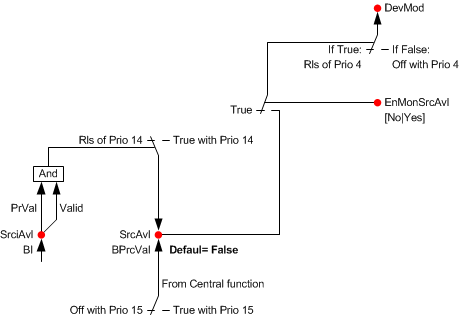
Source state monitoring
The source state indicates that media is flowing and heat pump coils can be activated.
The type of source state is configured to identify the location of the source (SrcStaMon). SrcStaMon is a multistate configuration parameter:
- None – The off command at equipment safety priority to device mode is disabled.
- Monitor enable source - When the source is commanded On, after a delay (DlyOnSrcSta) the compressor will be released; otherwise the compressor is set to off at equipment safety priority.
- Monitor source state - The source state (SrcSta) can come from a local BI sensor in the automation station. When there is no media flow the compressor is set to off at equipment safety priority.
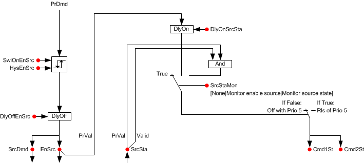
Interlocks
Air volume flow status: When the switch indicates no airflow, the component sets compressors off at equipment safety priority (Prio 5, Protection mode 2). When the switch indicates airflow, the safety command to the compressors is released.
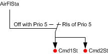
Air volume flow requests (heating, cooling, dehumidification)
Airflow heating request: When the present heating request signal is greater than the switch-on point or the device mode is "Fully open, heating" and the manual control mode is Automatic or Heating, then after a delay the Air volume flow heating request will be True.
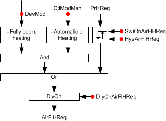
Airflow cooling request: When the present cooling request signal is greater than the switch-on point or the device mode is "Fully open, cooling" and the manual control mode is Automatic or Cooling, then after a delay the Air volume flow cooling request will be True.
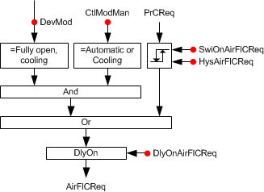
Airflow dehumidification request: When the present dehumidification request signal is greater than the switch-on point, then after a delay the Air volume flow dehumidification request will be True.
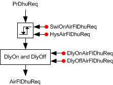
Airflow hold requests (heating, cooling)
Airflow hold for heating: When the present demand signal is greater than the switch-on point and the reversing valve position is Heating, the Air volume flow hold for heating will be True. When the present demand signal is less than the switch-on point minus a hysteresis, then after a delay the Air volume flow hold for heating will be False.
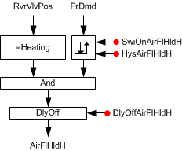
Airflow hold for cooling: When the present demand signal is greater than the switch-on point and the reversing valve position is Cooling, the Air volume flow hold for cooling will be True. When the present demand signal is less than the switch-on point minus a hysteresis, then after a delay the Air volume flow hold for cooling will be False.
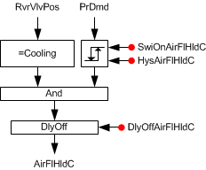
Signals in table are internal signals, not BACnet objects. For this reason they are not visible in the tool, but the parameters associated with them are. See comment column for hints on parameters that affect interlock functionality.
Signal | Type | Direction | Description | Comment |
|---|---|---|---|---|
AirFlSta | Boolean | In | Air flow status | No related parameters in Heat pump coils. AirFlSta is hard-coded. |
AirFlCReq | Boolean | Out | Air flow cooling request | See Configuration section for parameters named "...AirFlCReq". |
AirFlHReq | Boolean | Out | Air flow heating request | See Configuration section for parameters named "...AirFlHReq". |
AirFlDhuReq | Boolean | Out | Air flow dehumidification request | See Configuration section for parameters named "...AirFlDhuReq". |
AirFlHldC | Boolean | Out | Air flow hold for cooling | See Configuration section for parameters named "...AirFlHldC". |
AirFlHldH | Boolean | Out | Air flow hold for heating | See Configuration section for parameters named "...AirFlHldH". |
AirManOff | Boolean | In | Air manual off |
|
Equipment output limits
To avoid ice and refrigerant problems, specifications may call for logic that turns off the heat pump when the outside air is very cold. The following heat pump lock out feature is not active by default. To enable it, EnLockHpuTOaLo must be set to 1:Yes.
When the measured OA temperature value is below a configured cut out temperature, device mode (HcclDevMod) is set to Off at equipment safety priority (Prio 4). When the OA temperature rises above the cut out temperature plus a configured deadband, HcclDevMod is released from priority 4 and returns to normal control.
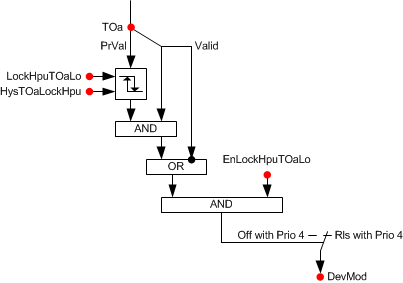
Fault inputs
Various heat pump safety switches can be connected to shut off the equipment including these examples:
- Low suction pressure
- High compressor pressure
- High refrigerant pressure
- Low refrigerant pressure
Note
See the Hvac17 room segment AF for how to configure a condensate level monitor. Hvac17
Optional binary input object(s) pick up any Heat pump equipment alarm switch. When the switch indicates a fault, the component sets device mode to off at equipment safety priority (Prio 4). The "Available" signals for cooling and dehumidification also turn off. When the switch indicates no fault, the command to the device mode is disabled.
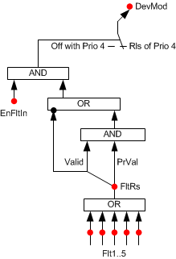
Heat pump compressor power
The nominal electric power usage of the compressor is provided for energy monitoring and coordination with other devices. When one stage of the heat pump coil is on, the compressor electric power (HpuElPwr) is equal to half nominal power (NomElPwr). The nominal power (NomElPwr) can be obtained from the heat pump name plate (from heat pump manufacturer). When both stages of the heat pump coil are on, the compressor electric power is equal to NomElPwr. When the Heat pump coil is off, HpuElPwr equals zero.
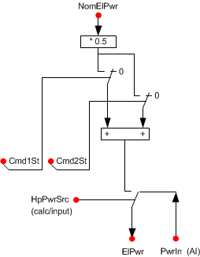
Configuration
 Parameters
Parameters
Description | Parameter | Default value |
|---|---|---|
Nominal electric power | NomElPwr | 0.4 [kW] |
Heat pump power 0:Calculated | HpuPwr | 0:Calculated |
Manual control mode 1:Automatic | CtlModMan | 1:Automatic |
Enable fault input 0:No | EnFltIn | 0:No |
Compressor | ||
Minimum switch-on time for compressor | TiOnMinCpr | 3 [min] |
Minimum switch-off time for compressor | TiOffMinCpr | 3 [min] |
Reversing valve | ||
Reversing valve activated by 0:Heating | RvrVlvActv | 1:Cooling |
Compressor state during switchover reversing valve 0:Off | CprStaRvrVlv | 0:Off |
Changeover delay for heating/cooling | ChovrDlyHC | 300 [s] |
Source | ||
Switch-on point for enable source | SwiOnPtEnSrc | 33 [%] |
Hysteresis for enable source | HysEnSrc | 16 [%] |
Switch-off delay for enable source | DlyOffEnSrc | 0 [s] |
Source state monitoring 1:None | SrcStaMon | 1:None |
Switch-on delay for source state | DlyOnSrcSta | 0 [s] |
Enable monitoring source state available 0:No | EnMonSrcAvl | 0:No |
Low outside air temperature lockout | ||
Enable lockout heat pump at low outside air temperature 0:No | EnLockHpuTOaLo | 0:No |
Lockout heat pump at low outside air temperature | LockHpuTOaLo | 4 [°C] |
Outside air temperature hysteresis for lockout heat pump | HysTOaLockHpu | 1 [K ] |
Enable lockout heating at low outside air temperature 0:No | EnLockHTOaLo | 0:No |
Lockout heating at low outside air temperature | LockHTOaLo | 4 [°C] |
Outside air temperature hysteresis for lock out heating | HysTOaLockH | 1 [K] |
Interlocks | ||
Switch-on point for air volume flow hold cooling | SwiOnAirFlHldC | 33 [%] |
Hysteresis for air volume flow hold cooling | HysAirFlHldC | 16 [%] |
Switch-off delay for hold signal for air volume flow cooling | DlyOffAflHldC | 0 [s] |
Switch-on point for air volume flow hold heating | SwiOnAirFlHldH | 33 [%] |
Hysteresis for air volume flow hold heating | HysAirFlHldH | 16 [%] |
Switch-off delay for hold signal for air volume flow heating | DlyOffAflHldH | 0 [s] |
Switch-on point for air volume flow cooling request | SwiOnAirFlCReq | 33 [%] |
Hysteresis for air volume flow cooling request | HysAirFlCReq | 16 [%] |
Switch-on delay for air volume flow cooling request | DlyOnAirFlCReq | 0 [s] |
Switch-on point for air volume flow heating request | SwiOnAirFlHReq | 33 [%] |
Hysteresis for air volume flow heating request | HysAirFlHReq | 16 [%] |
Switch-on delay for air volume flow heating request | DlyOnAirFlHReq | 0 [s] |
Switch-on point for air volume flow dehumidification request | SwiOnAflDhuReq | 33 [%] |
Hysteresis for air volume flow dehumidification request | HysAirFlDhuReq | 16 [%] |
Switch-on delay for air volume flow dehumidification request | DlyOnAflDhuReq | 0 [s] |
Switch-off delay for air volume flow dehumidification request | DlyOfAflDhuReq | 0 [s] |
Internal settings – do not change | ||
Temperature unit | TUnit | [°C] |
Temperature difference unit | TDiffUnit | [K] |
Interface
Interface | Description | Type | Ref. | Owned by | |
|---|---|---|---|---|---|
HpuCmd1St | Heat pump command first stage 0:Off | BO | ◉ | Room segment / Field device | |
HpuCmd2St | Heat pump command second stage 0:Off | BO | ◉ | Room segment / Field device | |
EnHpuSrc | Enable heat pump source 0:No | BO | ◉ | Room segment / Field device | |
HpuRvrVlv | Heat pump reversing valve 1:Heating | BO | ◉ | Room segment / Field device | |
HpuFltCol | Collection of heat pump fault | ColView | ● | - | |
| HpuFltRs | Result of heat pump fault 0:Normal | BCalcVal | ● | - |
HpuFlt | Heat pump fault 0:Normal | BI | ◉ | Room segment / Field device | |
HpuSrcSta | Heat pump source state 0:Off | BI | ◉ | Room segment / Field device | |
HpuSrcInAvl | Heat pump source input available 0:No | BI | ◉ | Room segment / Field device | |
HpuSrcAvl | Heat pump source available 0:No | BPrcVal | ● | - | |
Pwr | Power | AI | ◉ | Room segment / Field device | |
HCclDevMod | Heating/cooling coil device mode 1:Off | MPrcVal | ● | - | |
HCclCReq | Heating/cooling coil cooling request | ACalcVal | ● | - | |
HCclHReq | Heating/cooling coil heating request | ACalcVal | ● | - | |
HCclDhuReq | Heating/cooling coil dehumidification request | ACalcVal | ● | - | |
HCclAvlC | Heating/cooling coil available for cooling 0:No | BCalcVal | ● | - | |
HCclAvlH | Heating/cooling coil available for heating 0:No | BCalcVal | ● | - | |
HCclAvlDhu | Heating/cooling coil available for dehumidification 0:No | BCalcVal | ● | - | |
HpuSta | Heat pump state 1:Off | MCalcVal | ● | - | |
HpuElPwr | Heat pump electric power | ACalcVal | ● | - | |
HpuSrcDmd | Heat pump source demand 0:No | BCalcVal | ● | - | |
SplyHpu | Supply chain for heat pump | GrpMbr | ● | - | |
Engineering and commissioning
The Boolean parameters RvrVlvActv and CprStaRvrVlv must match the operational type of the heat pump device being used. See Configuration.
The loop control objects in the Room AF (one each for cooling, heating, and dehumidification) are defined per default as PID controllers. To enable staged control the following properties can be changed for each controller as needed:
- Controller type = Staged controller
- Number of stages = 2
Boolean parameters EnLockHTOaLo and EnLockHpuTOaLo are set to No by default. Setting either to Yes will require a TOa (temperature outside air) value to be sent from a field panel. If parameter(s) are set to Yes and a TOa sensor is not present (or signal is not valid), device mode (HCclDevMod) is set to Off at equipment protection priority, shutting off the compressor(s). To disable the feature, either for testing purposes during startup or for system design needs, set the parameter(s) to No.
Water source heat pump use cases
The following four examples list objects and parameters for optional water source configurations.
1) Loop water source controlled externally
- Binary process value HpuSrcAvl written from Central
Loop water source controlled externally | ||||
|---|---|---|---|---|
Description | Short name | Type | Value | Comment |
Heat pump source state | HpuSrcSta | BI | - | Local binary input (not used in this configuration) |
Heat pump source input available | HpuSrcInAvl | BI | - | Local binary input (not used in this configuration) |
Heat pump source available | HpuSrcAvl | BPrcVal | - | Binary process value object In this use case, HpuSrcAvl enables or disables HpuDevMod on a command from Central. If HpuSrcAvl = No, HpuDevMod is set to 1:Off at priority 4. |
Enable monitoring source state available | EnMonSrcAvl | Boolean | Yes | Configuration parameter Must be set to Yes to enable the monitoring of HpuSrcAvl. |
Source state monitoring | SrcStaMon | Multistate | 1:None | Configuration parameter |
Enable heat pump source | EnHpuSrc | BO | - | Binary command output (not used in this configuration) |
2) Loop water source controlled externally with local source monitoring
- Binary process value HpuSrcAvl written from Central or by local binary input
Loop water source controlled externally with local source monitoring | ||||
|---|---|---|---|---|
Description | Short name | Type | Value | Comment |
Heat pump source state | HpuSrcSta | BI | - | Local binary input (not used in this configuration) |
Heat pump source input available | HpuSrcInAvl | BI | - | Local binary input Valid local input overrides Central status for HpuSrcAvl at priority 14. |
Heat pump source available | HpuSrcAvl | BPrcVal | - | Binary process value object In this use case, HpuSrcAvl enables or disables HpuDevMod depending on either a command from Central or the status of HpuSrcInAvl. If HpuSrcAvl = No, HpuDevMod is set to 1:Off at priority 4. |
Enable monitoring source state available | EnMonSrcAvl | Boolean | Yes | Configuration parameter Must be set to Yes to enable the monitoring of HpuSrcAvl. |
Source state monitoring | SrcStaMon | Multistate | 1:None | Configuration parameter |
Enable heat pump source | EnHpuSrc | BO | - | Binary command output (not used in this configuration) |
3) Local ground source controlled locally
- Local command of valve or pump
- No Central command used
Local ground source controlled locally | ||||
|---|---|---|---|---|
Description | Short name | Type | Value | Comment |
Heat pump source state | HpuSrcSta | BI | - | Local binary input (not used in this configuration) |
Heat pump source input available | HpuSrcInAvl | BI | - | Local binary input (not used in this configuration) |
Source state monitoring | SrcStaMon | Enumerated | 2:Monitor enable source | Configuration parameter Set to "Monitor enable source" to enable the monitoring of EnHpuSrc. |
Enable heat pump source | EnHpuSrc | BO | - | Binary command output Enables / turns on valve or pump. |
Switch-off delay for enable source | DlyOffEnSrc | Unsigned | 60s | Configuration parameter (default = 0). Set to a value (e.g. 60 seconds) that allows the pump or valve to remain on / open for a period of time to prevent cycling when there is no demand. |
Enable monitoring source state available | EnMonSrcAvl | Boolean | No | Configuration parameter |
4) Local ground source controlled locally, with monitoring of local source
- Local command of valve or pump
- Monitoring of local source state
- No Central command used
Local ground source controlled locally, with monitoring of local source | ||||
|---|---|---|---|---|
Description | Short name | Type | Value | Comment |
Heat pump source state | HpuSrcSta | BI | - | Local binary input for media flow or pump status. When valid input = Off, heat pump commanding is disabled at priority 5. |
Heat pump source input available | HpuSrcInAvl | BI | - | Local binary input (not used in this configuration) |
Source state monitoring | SrcStaMon | Enumerated | 3:Monitor source state | Configuration parameter Set to "Monitor source state" to enable the monitoring of HpuSrcSta. |
Enable heat pump source | EnHpuSrc | BO | - | Binary command output Enables / turns on valve or pump. |
Switch-off delay for enable source | DlyOffEnSrc | Unsigned | 60s | Configuration parameter (default = 0). Set to a value (e.g. 60 seconds) that allows the pump or valve to remain on / open for a period of time to prevent cycling when there is no demand. |
Enable monitoring source state available | EnMonSrcAvl | Boolean | No | Configuration parameter |